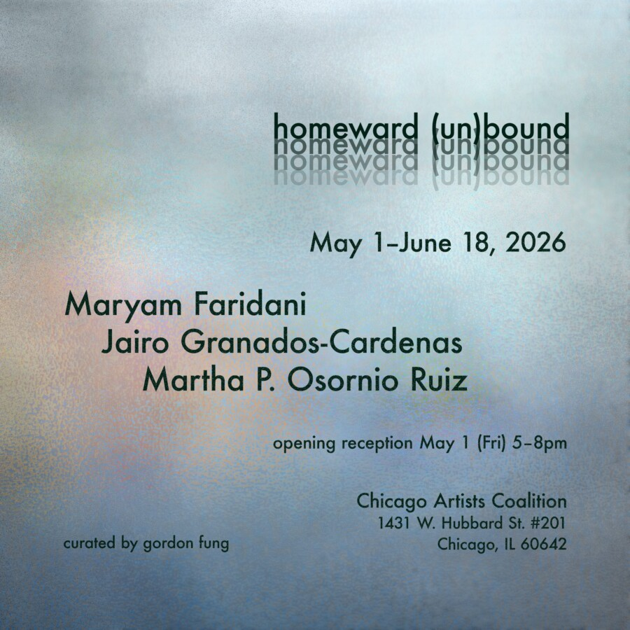

homeward (un)bound
homeward (un)bound
Exhibition Date: May 1, 2026 – June 18, 2026
Opening: Friday, May 1, 2026 from 5–8pm
Exhibiting Artists: Maryam Faridani, Jairo Granados-Cardenas, and Martha Osornio Ruiz
Curated by: Gordon Dic-Lun Fung
Home presumably houses a space of rest, comfort, and security. With deteriorating human conditions, social unrest, and global warfare, insecurity confronts the notion of home. Responding to this degenerate time, Maryam Faridani, Jairo Granados-Cardenas, and Martha Osornio Ruiz poetically interweave an artistic narrative that interrogates the meaning of home, inviting viewers to examine the threshold of domesticity and seek solutions that provide a moment of comfort.